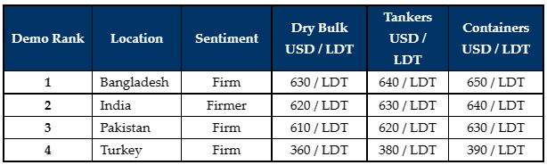

inWeekly Demolition Reports28/02/2022

Sub-continent markets remain firmly poised for another week, particularly in Bangladesh and a now resurgent India.
Pakistan, as seems to be typical for the market there, has gone quiet over much of the international uncertainty surrounding the possible outcome of the recent Russian invasion of Ukraine.
Bangladeshi Buyers have in turn, ramped up their buying and price offerings, mindful of the fact that some increased oil / gas prices due to the unfolding crisis in Ukraine, in addition to the inevitable sanctions that may starve Ship Recyclers of a supply line of ships for a short time.
Steel scrap prices have improved significantly in Bangladesh and India this week, leaving both markets positively poised going into March, whilst Pakistan slows down and waits to watch the international situation and subsequent market developments.
The Turkish market remains especially poised to suffer from the outcome of the Ukrainian invasion, with the supply of import of steel likely to be affected. Should this happen, we can possibly see import steel (and likely) ship offerings from Turkey firm up for a short period.
Overall, Putin’s disgraceful actions of the Russian invasion of Ukraine has certainly shocked the world over and the raft of justifiable sanctions is likely to have a profound impact on the shipping world – especially when negotiating state owned sanctioned Russian tonnage, which of course will restrict them from heading for recycling shores.
As it stands, despite the ongoing international turmoil, recycling markets keep giving owners a viable end of life option at fantastic decade long high levels, while freight rates too continue to perform admirably at present.
For week 7 of 2022, GMS demo rankings / pricing for the week are as below.

📄 Download PDF: 2022-02-27Vxf_org.pdfSource: GMS,Inc. ,https://www.gmsinc.net/gms_new/index.php/web